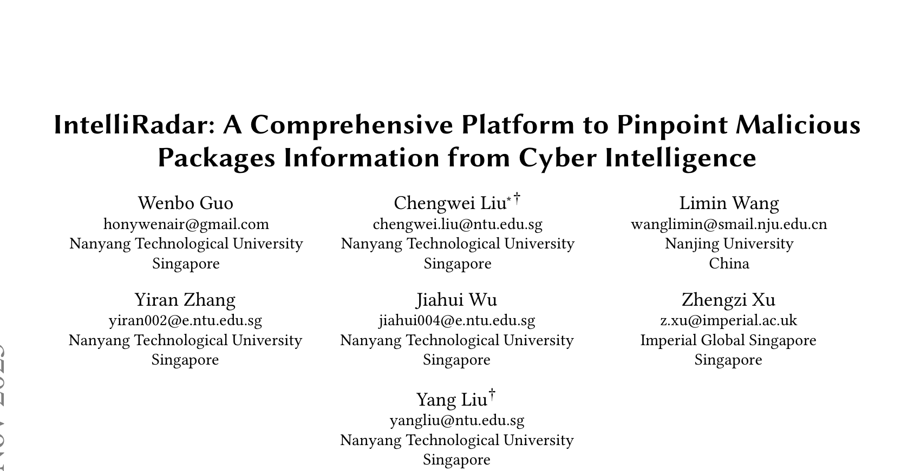
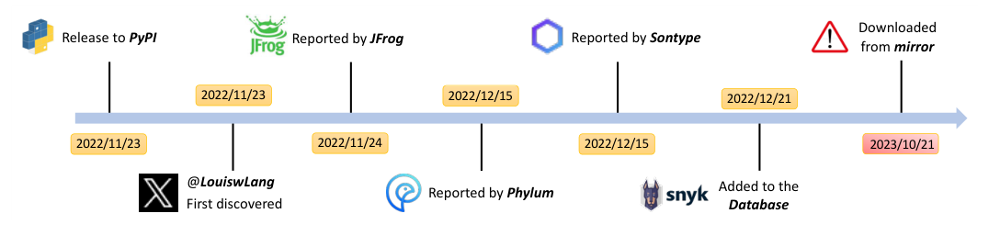
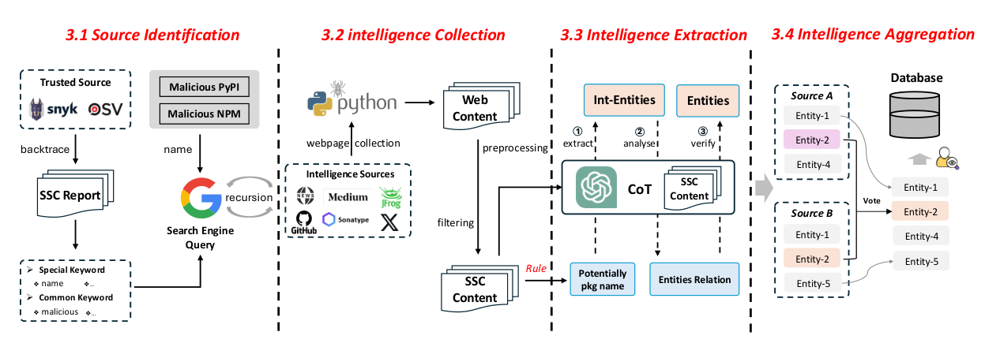
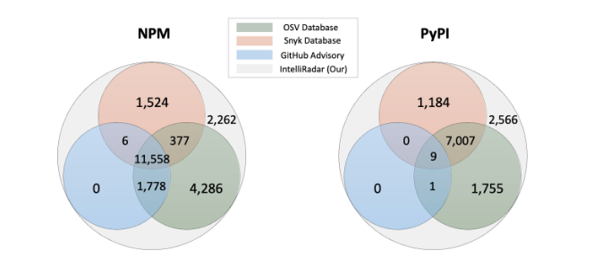
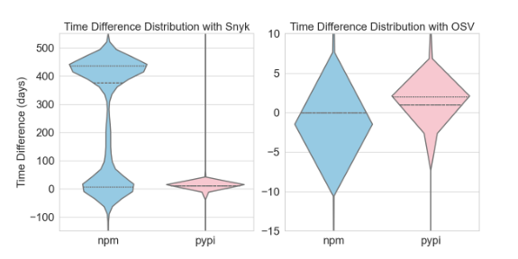
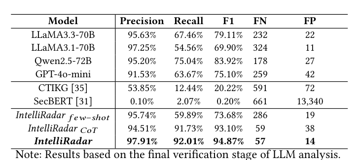

本文看点
01
34313个恶意包最大公开库
02
76.6%情报早于Snyk收录
03
每条情报成本仅3美厘
01
PAPER INFO
论文信息
【论文题目】IntelliRadar: A Comprehensive Platform to Pinpoint Malicious Packages Information from Cyber Intelligence
【论文链接】https://arxiv.org/abs/2409.15049
【平台主页】https://sites.google.com/view/intelliradar/home

— 论文题头
本文由来自南洋理工大学、南京大学、Imperial Global Singapore 的研究团队完成，已被软件工程顶会 ICSE 2026 录用。团队专注软件供应链安全与开源情报方向，IntelliRadar 是其恶意包情报体系的核心工作。
02
OVERVIEW
导读
PyPI、NPM 上的恶意包被安全研究者发现后，情报往往先出现在博客、推特、安全厂商报告这些非结构化角落，要过很久才进入 OSV、Snyk 等权威数据库——而下游用户依赖的正是这些数据库。IntelliRadar 做的事情很直接：让机器持续盯着全网情报源，用 LLM 把散落的恶意包情报自动抽取、聚合成数据库。结果是一个包含 34313 个恶意包（12522 个 PyPI + 21791 个 NPM）的最大公开恶意包情报库：精度 97.4%，比 OSV 多收录 7542 个、比 Snyk 多 12684 个，且大部分情报比商业数据库更早——最多提前一年以上。
03
BACKGROUND
问题与挑战
作者用一个真实案例点破问题。恶意 PyPI 包 colorwed 上传当天（2022/11/23）就有人在推特上曝光，随后 JFrog、Phylum、Sonatype 相继报告，但直到 12 月 21 日才进入 Snyk 数据库——整整一个月的空窗期，期间它照常被下载。更普遍的数据是：72.4% 的恶意 PyPI 包在被曝光后仍留在镜像服务器上，colorwed 被确认恶意后又被下载了 1000 多次。

— 图1：恶意包 colorwed 的情报传播时间线——首次曝光到进入安全数据库隔了近一个月，随后仍能从镜像下载
要填上这个空窗期，有三道坎：情报源在哪（第一手情报散落在博客、社交媒体、厂商报告里，没有清单）；关键信息怎么抽（同一篇报告里恶意包名和正常包名混在一起，通用 NER 模型分不清）；情报可不可信（网上的信息本身可能是错的）。
04
METHOD
方法
IntelliRadar 的流水线分四步，如下图：

— 图2：IntelliRadar 工作流——情报源识别、情报采集、LLM 情报抽取、多源聚合四步流水线
第一步，找齐情报源。 从已知恶意包报告出发，用 LDA 聚类提取通用关键词、TF-IDF 提取专用关键词，通过搜索引擎大规模检索后滚雪球式递归扩展，最终从 2412 个候选域名中锁定 24 个持续发布恶意包情报的源头（安全公司、安全媒体、开发者社区、代码平台、社交媒体五类）。递归验证显示新发现外链 97% 都指回这 24 个源，说明清单已收敛。
第二步，定向采集。 对 24 个源做针对性爬取，用"生态关键词必选 + 安全关键词可选"的两级过滤把 5 万余页原始网页筛到 2.8 万页，token 消耗直接砍掉 58.4%，过滤召回率仍有 96.4%——这是它成本低的第一个原因。
第三步，LLM 三段式抽取。 先用正则和词典过滤出候选包名，再让 LLM 按实体抽取 → 关系分析 → 交叉验证三段 CoT 流程处理：抽出包名、版本、攻击手法、IOC 等 9 类实体，围绕包组织关系，最后让模型对照原文自检纠错。CoT 把召回率从 few-shot 的 59.89% 拉到 91.73%，两者结合后 F1 达到 94.87%（精度 97.91%）——对比之下，通用威胁情报方法 CTIKG 只有 20.22%，SecBERT 几乎完全失效（0.20%）。在训练截止日期之后的全新网页上，F1 仍有 93.70%，基本排除了数据泄漏的解释。
第四步，投票聚合 + 双重验证。 多源冲突用"按时间戳投票"解决（后发的报道通常引用并修正先前信息），再经官方 registry 元数据核验包名真实存在（排除 LLM 幻觉）、与权威数据库和多源交叉印证恶意性，最终 97.4% 精度的数据库由此而来。
05
RESULTS
实验结果
覆盖面：不是"追平"数据库，而是补上它们的盲区。 与 OSV、Snyk、GitHub Advisory 的四方对比显示：四库共有的 PyPI 恶意包只有 9 个，而 IntelliRadar 独有 2566 个 PyPI + 2262 个 NPM 恶意包——任何现有结构化数据库都没收录。这些独有 PyPI 包在被发现前已被累计下载 326740 次。

— 图3：四大数据库恶意包覆盖对比——灰色大圆为 IntelliRadar，独有部分（NPM 2262 / PyPI 2566）是所有权威数据库的共同盲区
时效性：快出的不是几小时，是几个月。 76.6% 的 NPM 情报和 70.3% 的 PyPI 情报早于 Snyk 收录，其中 6598 个 NPM 包平均早 100.3 天、近半数提前一年以上；对 OSV 同样领先（4711 个 PyPI 包更早）。4533 个 NPM 和 549 个 PyPI 恶意包在发布当天就被捕获。

— 图4：IntelliRadar 相对 Snyk（左）与 OSV（右）的收录时间差分布——正值代表更早，NPM 对 Snyk 的领先集中在 400 天上下
抽取引擎的硬指标。 不同 LLM 与方法的对比中，完整版 IntelliRadar 以 F1 94.87% 领先所有开源模型和已有方法，误报仅 14 个：

— 图5：不同 LLM 与方法的抽取性能对比——三段式 CoT + few-shot 的完整方案精度与召回同时占优
成本与真实影响。 关键词过滤把 1700 万 token 压到 707 万，全库构建成本 93.8 美元，平均每条情报 0.003 美元，持续监控每月只要 7 美元。用这个库扫描国内主流 PyPI 镜像，发现 1981 个恶意包仍在镜像上存活（清华镜像 781、腾讯 548、豆瓣 395……），累计被下载超 86240 次——最极端的 ethereum2 比 Snyk 早识别 436 天，期间被下载 436 次。团队向镜像维护方通报后，腾讯、豆瓣、清华已确认清除。
06
TAKEAWAYS
启发与点评
对研究者：这篇论文展示了"LLM + 领域知识"做威胁情报抽取的正确打开方式——不是把网页直接塞给大模型，而是用正则预过滤对抗幻觉、用三段 CoT 分解任务、用 registry 元数据和多源投票兜底验证。94.87% 对 20.22% 的差距说明：领域化的流水线设计比模型本身更值钱。它也把"情报时效性"从一个模糊的痛点变成了可量化的研究对象（时间差分布、镜像存活分析），这套度量方法值得后续工作沿用。
对从业者：两个可以直接行动的点。其一，如果你的依赖安全策略只盯 OSV/Snyk，你看到的恶意包情报平均晚了几十到上百天，且有数千个恶意包根本不在里面——把非结构化情报源纳入监控是有真实收益的。其二，镜像站是被严重低估的风险面：上游删了包，镜像可能还留着，1981 个存活恶意包就是证据。企业内部镜像同样适用这个教训，值得对照该数据库做一次自查。
一点观察：从这篇工作到恶意 Skill 检测，可以看到同一条主线——供应链威胁的"发现"早已不是瓶颈，"情报到达下游的速度"才是。用 LLM 把人类世界的非结构化安全知识实时结构化，可能是未来几年供应链防御体系里性价比最高的一环。